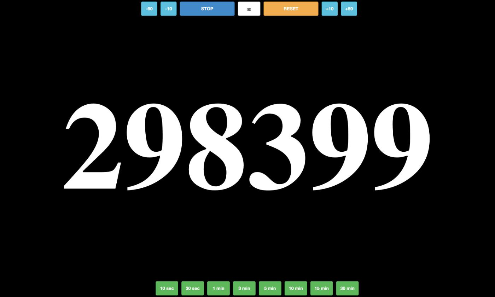
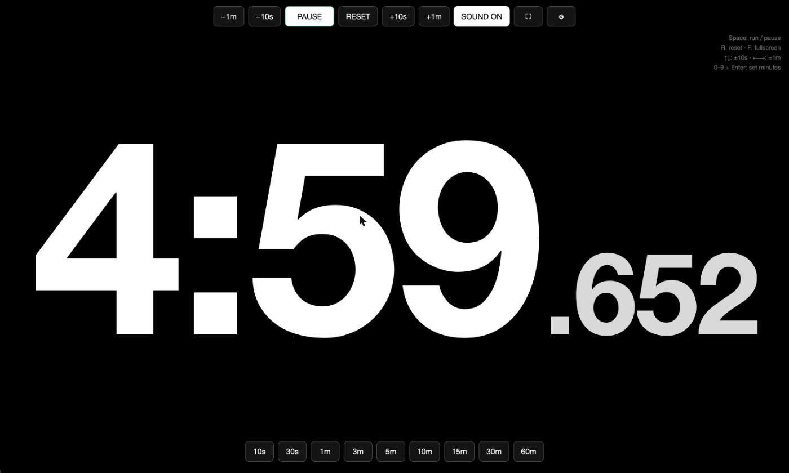
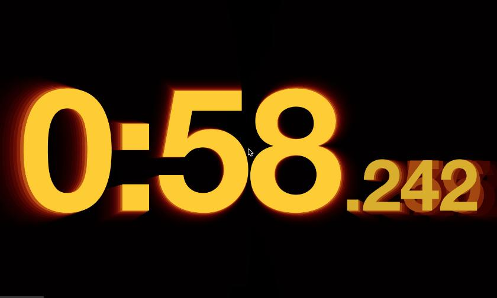
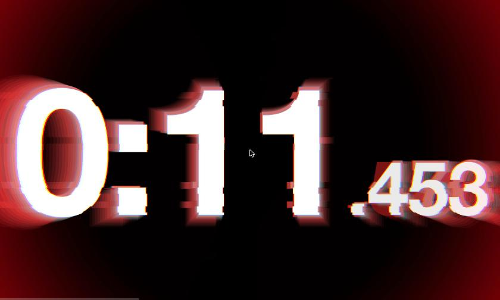
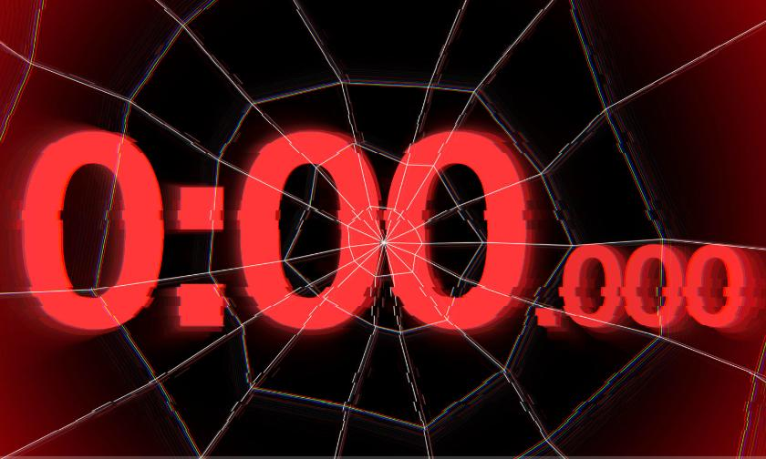
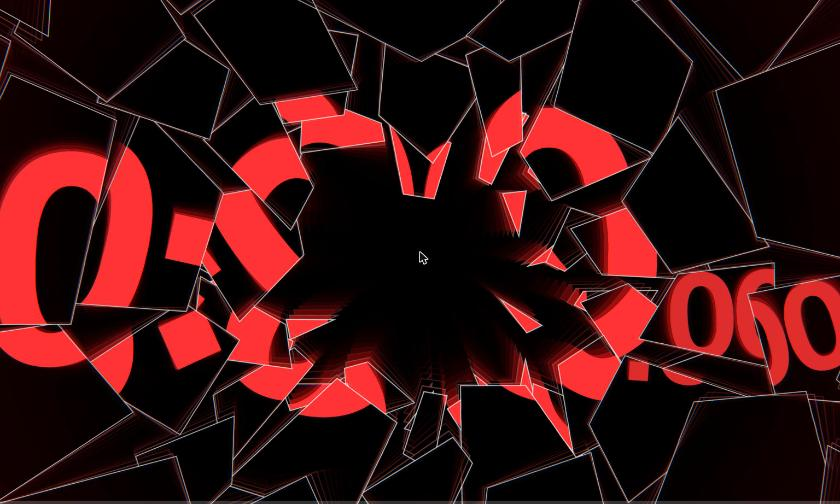
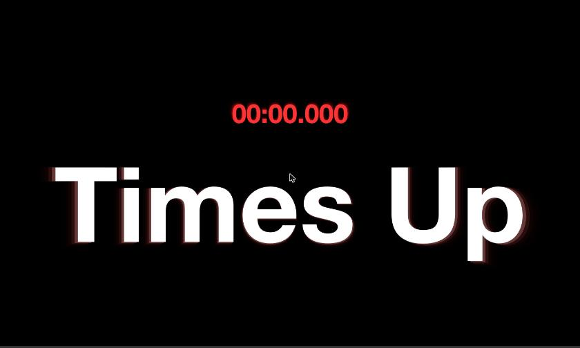
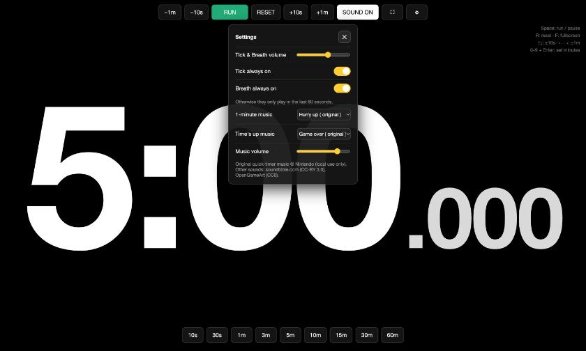

一個全螢幕倒數計時器的兩個版本：2013 年八月一天寫完的原版，和加上心跳、殘影、玻璃碎裂的新版。

2013 年 8 月，寫完的當月就在活動現場用來幫講者計時。
筆電上的 2065：單位是毫秒，代表只剩 2.065 秒。
| 2013-08-09 | 9c3de7c | zbryikt | Initial commit |
| 2013-08-09 | 15b236d | Kirby T. Wu | add init version |
| 2013-08-09 | 717e8b5 | Kirby T. Wu | fix negative time; tweak style |
| 2013-08-09 | 4b9abfc | Kirby T. Wu | add delay adjust functionality |
| 2013-08-09 | 0605349 | Kirby T. Wu | add panel toggle, various predefined time |
| 2013-08-09 | 9a7456f | Kirby T. Wu | fix btn function issue (10sec and 60sec malfunction) |
| 2013-08-09 | 50e8a87 | Kirby T. Wu | add screenshot |
| 2013-08-09 | f148176 | Kirby T. Wu | update README for license, screenshot and demo |
| 2013-08-10 | f5ac8e3 | Kirby T. Wu | add sound effects |
| 2013-08-10 | a3faf06 | Kirby T. Wu | update readme |
| 2013-08-10 | bd49a6f | Kirby T. Wu | add missed index.html |
| 2013-10-19 | b04d1fb | Kirby T. Wu | add new sound effect; fix timer inaccurate issue |
| 2014-01-21 | a331cb9 | youreevil | Compress_Images |
| 2016-03-06 | 527c075 | zbryikt | Merge pull request #1 from ghost/Compress_Images |
| 2019-02-22 | 459965d | Kirby Wu | add 15min |

#5m、#90s





| Classic (2013) | Neo (2026) | |
|---|---|---|
| 顯示 | 剩餘毫秒 298399 | 4:59.652 |
| 計時 | setInterval 100ms | performance.now() + rAF |
| 依賴 | jQuery + Bootstrap 3 | 無 |
| 畫面 | DOM 文字、紅白閃爍 | Canvas + WebGL 後製 |
| 聲音 | 兩段 mp3 | 原版音樂 + 滴答 + 喘氣 + 碎玻璃 |
| 時間到 | 繼續閃爍 | 停止 → 碎裂 → Times Up |
| 操作 | 滑鼠 | 滑鼠、鍵盤、網址 hash、設定面板 |